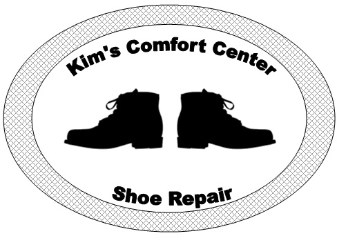

With Over 30 Years Experience"
Welcome to Kim's Comfort Center
Kim’s Comfort Center and Shoe Repair has been servicing the Saginaw Bay Area for more than 30 years. We repair everything from your favorite heels to your trusted everyday work boots. We also service all types of leather goods as well.
Quick turn around is key in this business. When you have a shoe emergency you don’t want to have to wait a week to have it fixed. We specialize in “On The Spot” repairs, getting it done well and quickly so you can get back on the road.
Being in this business as long as we have, We have seen it all when it comes to leather. So please don’t hesitate to stop by, because chances are you are not the first one to need that fixed.